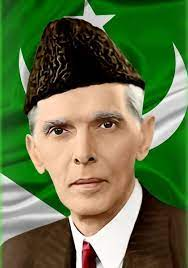

Founder Of Pakistan
Quid-e-Azam
Muhammad Ali Jinnah
Quid-e-Azam
Muhammad Ali Jinnah

Muhammad Ali Jinnah born Mahomedali Jinnahbhai 25 December 1876 11 September 1948) was a barrister,
politician and the founder of Pakistan.[1] Jinnah served as the leader of the All-India Muslim
League
from 1913 until the inception of Pakistan on 14 August 1947, and then as the Dominion of Pakistan's
first governor-general until his death. He is revered in Pakistan as the Quaid-i-Azam ("Great
Leader")
and Baba-i-Qaum ("Father of the Nation"). His birthday is observed as a national holiday in
Pakistan.
Born at Wazir Mansion in Karachi, Jinnah was trained as a barrister at Lincoln's Inn in London,
England. Upon his return to India, he enrolled at the Bombay High Court, and took an interest in
national politics, which eventually replaced his legal practice. Jinnah rose to prominence in the
Indian National Congress in the first two decades of the 20th century. In these early years of his
political career, Jinnah advocated Hindu–Muslim unity, helping to shape the 1916 Lucknow Pact
between the Congress and the All-India Muslim League, in which Jinnah had also become prominent.
Jinnah became a key leader in the All-India Home Rule League, and proposed a fourteen-point
constitutional reform plan to safeguard the political rights of Muslims in the Indian subcontinent.
In 1920, however, Jinnah resigned from the Congress when it agreed to follow a campaign of
satyagraha, which he regarded as political anarchy
Quotes
- “Expect the best, prepare for the worst.”
- “India is not a nation, nor a country. It is a subcontinent of nationalities.”
- “I have nothing to do with this pseudo-religious approach that Gandhi is advocating.”
- “I do not believe in taking the right decision, I take a decision and make it right.”
- “With faith, discipline and selfless devotion to duty, there is nothing worthwhile that you cannot achieve.”
- “There are two powers in the world; one is the sword and the other is the pen. There is a great competition and rivalry between the two. There is a third power stronger than both, that of the women.”
- “Think a hundred times before you take a decision, but once that decision is taken, stand by it as one man.”
- “Democracy is in the blood of the Muslims, who look upon complete equality of mankind, and believe in fraternity, equality, and liberty.”